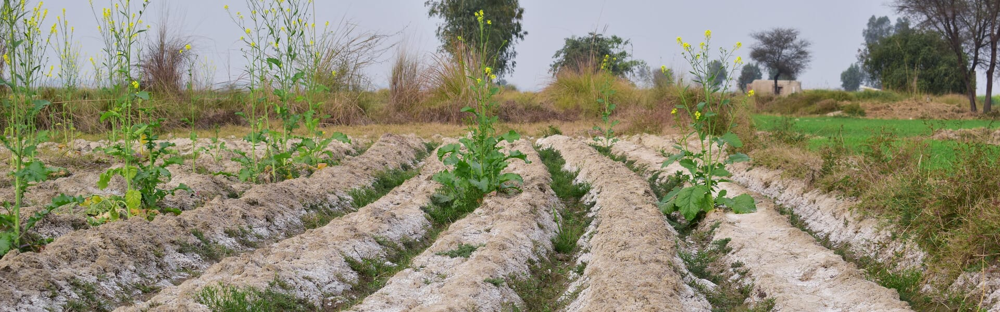

Origin, Classification, and Distribution
Salt-affected soils span all continents and climates, but are more prevalent in arid and semi-arid regions than humid ones. Their diverse characteristics demand customized reclamation strategies for sustained productivity.
Origin of Salts
Excessive salts in the surface and root zone characterize saline soils, primarily derived from primary minerals in the earth's crust exposed on the surface.
Classification
Saline Soils
High soluble salts (EC > 4 dS/m), pH < 8.5
Sodic Soils
High sodium (ESP > 15%), pH > 8.5

Visual representation of salt-affected soil